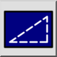
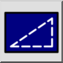
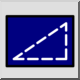
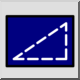

Типы линий, оптимизированные для экрана
Панель инструментов / Иконка:
 

Меню: Просмотр > Типы линий, оптимизированные для экрана
Горячая клавиша: N, L
Команды: screenlinetype | nl
Это автоматический перевод.
Панель инструментов / Иконка:
 

Меню: Просмотр > Типы линий, оптимизированные для экрана
Горячая клавиша: N, L
Команды: screenlinetype | nl
Служит для переключения экранного режима типа линии текущего чертежа.
Если этот режим включен, то типы линий оптимизируются для экрана
компьютера. Все линии отображаются на экране с шириной линий (при увеличении
ширина линий не увеличивается), а все шаблоны отображаются в виде фиксированных
пиксельных шаблонов на экране (пунктир не увеличивается при увеличении).
Если этот режим выключен, толщина линий и типы линий отображаются в
единицах измерения (по умолчанию).